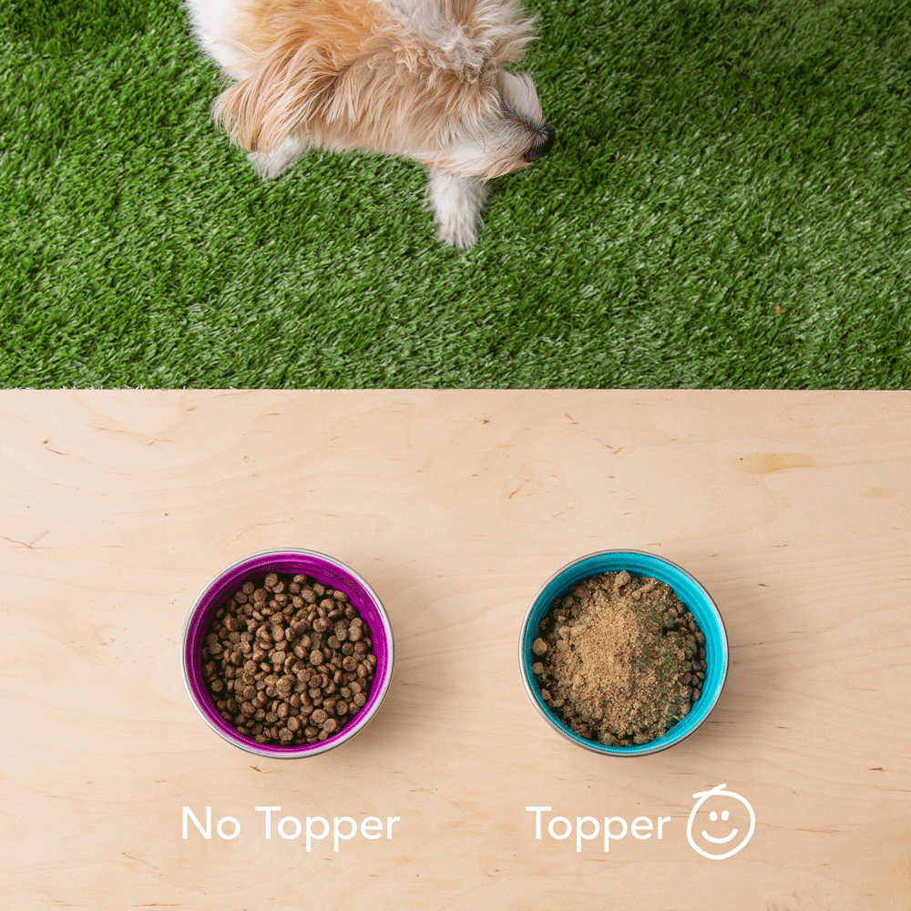
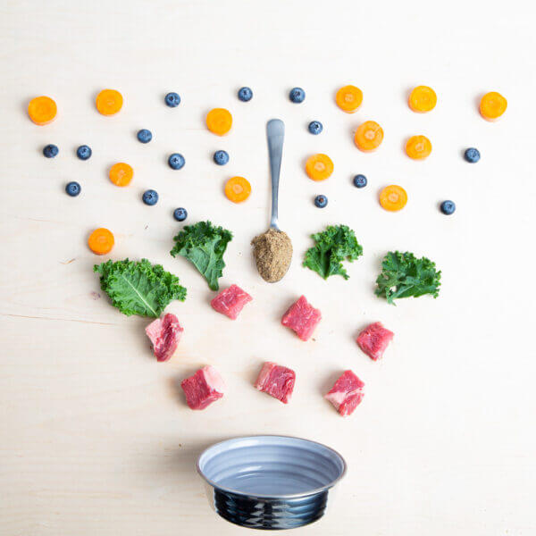

Dog food toppers have recently increased in popularity, but many dog parents are still unsure about them. Feeding your dog the same kibble every day just seems much easier than trying to add something new to their diet. However, some toppers do much more than just add yummy flavor for your dog.
Happy, Healthy Topper is our superfood topper, and it has all the nutrients your dog needs to thrive. By just pouring it on top of your dog’s dry food, your dog will suddenly have a delicious feast with all the necessary health benefits. Here are 5 reasons why you should consider adding Happy, Healthy Topper to your dog’s routine.
How often do you look at the ingredients in your dog’s dry food? Usually, you’ll find a protein along with some items that may or may not be good for your dog. In some cases, you won’t even find a quality protein, you’ll just find questionable fat and by-products.
After the meat gets cooked for dry food, a lot of the moisture is taken away, leaving you with only a small amount of protein along with some unhealthy fillers. With Happy, Healthy Topper, all the quality ingredients are equally important so nothing gets left behind as the food is created.
Happy, Healthy Topper uses freeze-drying processes to preserve the raw meat, fruits, and vegetables. When meat is freeze-dried, it’s first flash frozen at an extremely low temperature. Then, the moisture is removed with a vacuum process. The food is then preserved in a safe way with no chemicals. Also, the probiotics are added after this process so they will be as effective as possible.
Kibble is packed with lots of ingredients, many of which are unnecessary. Happy, Healthy Topper only uses a few essential ingredients that your dog truly needs. Not only does this guarantee that all the ingredients will benefit your dog, but it also makes it much safer for dogs with allergies or sensitivities
Some dog food toppers on the market are either dehydrated or cooked. These processes use high heat, which kills many of the nutrients that are present in raw meat. Raw meat keeps the nutrients as natural as possible, just like how your dog’s ancestors ate in the wild.
Raw diets might seem a little gross to some dog parents, but there’s nothing more natural for dogs. Their digestive systems have evolved to handle the raw meat that they would eat in the wild. That’s why Happy, Healthy Topper uses raw ingredients to provide as many nutrients as possible.
The freeze-drying process removes water, which significantly reduces the weight and size of the topper. So, your dog will get more protein and nutrients in a smaller, more affordable package. Adding this topper to your dog’s kibble is much cheaper than completely changing their food, and it’s just as healthy!